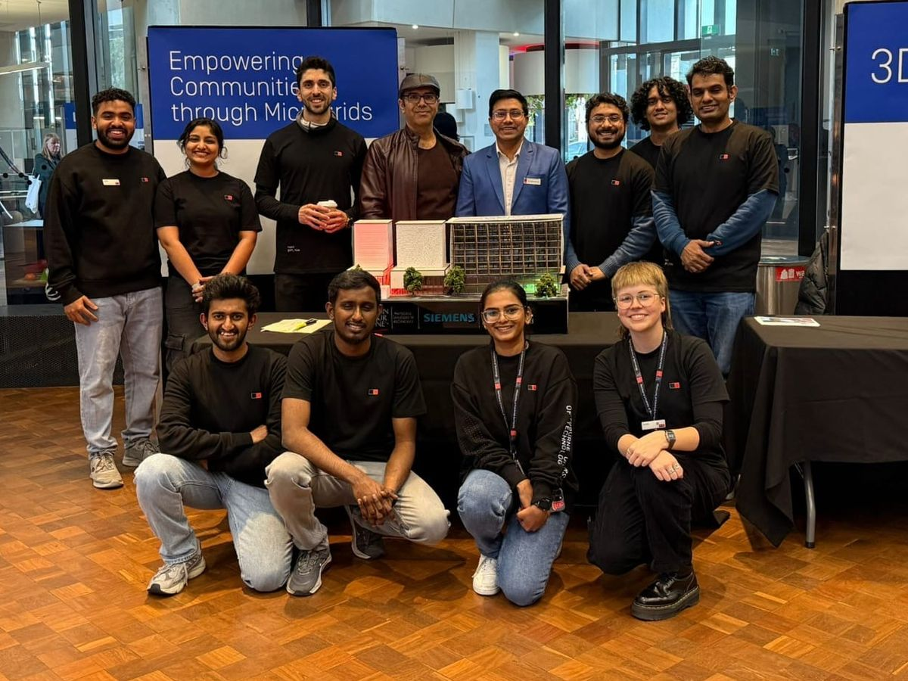

Research
Millions of solar panels, home batteries and electric cars are joining the grid. They can make it stronger or break it. My research is about making sure it's the first one.

Electric cars as grid helpers
PhD research, 2024 – nowWhen everyone gets home at 6 pm and plugs in their car, demand on the grid jumps at the worst possible time. I build planning methods that spread charging across the night, so cars ease pressure on the network instead of adding to the evening peak.
I've also looked at where charging stations should go in a small local grid, and how smart charging keeps voltage in safe limits for nearby homes.
Related papers
- Fuzzy-informed optimisation for reduced peak load and EV management, Journal of Energy Storage, 2025
- SoC-aware EV charging and voltage regulation, IEEE ETFG, 2025
- EV charging station placement in a hybrid microgrid, IEEE AUPEC, 2025
Neighbours sharing energy
PhD research, 2024 – nowToday, a house with solar panels sells spare power back to the grid for very little. Peer-to-peer energy sharing lets that house sell directly to a neighbour instead. Add electric cars, which are basically batteries on wheels, and you get a local energy market on your street.
I study how to run these local markets without making the grid unstable. I test my ideas on the same simulation software (PSS®E) that network operators use for real planning.
Related papers
- A review of electric vehicle integration in peer-to-peer energy networks, World Electric Vehicle Journal, 2026
Restarting the grid after a blackout
CSIRO, 2025 – 2026After a major blackout, the grid has to be switched back on piece by piece. That job has always been done by big coal, gas and hydro generators. As those close, someone else has to do it.
At CSIRO, I tested whether the electronics inside solar farms and big batteries can take over. I looked at how two types of this equipment work together, and where their limits are.
Related papers
Earlier work: measuring power
Aligarh Muslim University, 2019 – 2023You can't control what you can't measure. I designed, built and tested low-cost circuits that measure power flow accurately, including the "reactive" power that keeps voltage stable. This hands-on hardware work produced a published patent and several journal papers.
Related work
- Real and reactive power measurement with phase-controlled switching, Sensors and Actuators A, 2024
- Reactive current sensor for static VAr control, IEEE Sensors Journal, 2023
- Patent: Measurement of real and reactive power using controlled rectifiers, India, 2021
Tools I use
Grid simulation in PSS®E, PSS® SINCAL and MATLAB/Simulink. Optimisation and automation in Python and IBM CPLEX. Hardware design and lab testing for power electronics and sensors.